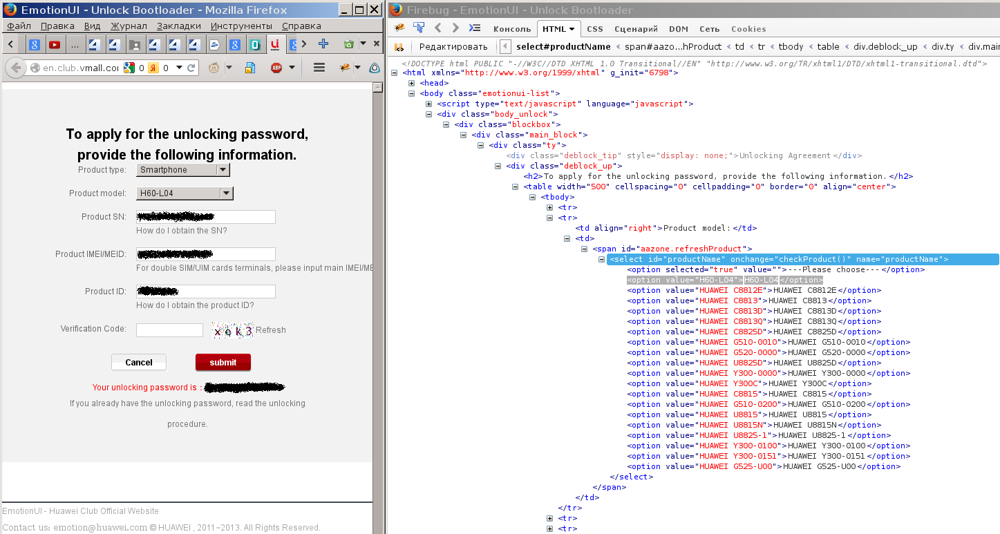

В самом начале этого цикла статей было сказано, что для работы потребуется Android SDK. Из состова данного SDK нам потребуются только утилиты adb и fastboot. Это консольные утилиты. Обычно они располагаются в подкаталоге platform-tools. Через данные утилиты мы будет разблокировать загрузчик и производить другие действия. Под Linux данные утилиты надо запускать от рута, либо заморочиться и прописать правила в UDEV.
Так же нам понадобится код разблокировки. Его мы можем получить в онлайн через браузер, в котором активированы средства разработки - Firefox с установленным FireBug или Google Chrome.
Переходим по ссылке:
http://en.club.vmall.com/emotiondownload.php?mod=unlock&action=pre
В поле Product type выбираем Smartphone.
В поле Product model выбираем модель C8812. После чего выбираем инспектирование элемента, и заменяем имя элемента:
Было: <option value="C8812">C8812</option>
Должно стать: <option value="H60-L04">H60-L04</option>
Сразу после смены имени элемента, элемент изменится и в окне браузера. Далее указываем записанные заранее данные:
Вводим код капчи, нажимаем кнопку Submit. В ответ буден выдан код разблокировки:
Your unlocking password is：3501951442297514
Получение кода выглядит примерно вот так:

Внимание! Советую записать код разблокировки в надежном месте, так как сайт http://en.club.vmall.com только до поры до времени будет поддерживаться компанией Huawei. В какой момент на него забьет производитель - неизвестно. Я посмотрел исходники страниц генерации кода разблокировки, и совершенно не порадовался: код генерируется на сервере через *.php скрипт (надежда, что всю логику поместили в JavaScript не оправдалась, а ведь можно было бы сделать резервную копию).
Кстати, еще один сервис по получению кода разблокировки находится здесь:
http://emui.huawei.com/plugin.php?id=unlock&mod=detail
И еще есть ручной способ получения кода разблокировки.
Создаем e-mail на имя получателя: mobile@huawei.com
В письме указываем следующие данные:
В ответ приходит код разблокировки. Все официально.
Далее подключаем телефон USB-кабелем. Переходим в каталог с программами adb и fastboot. Для Windows строка с командой будет состоять из имени программы и параметров. Для Linux перед именем программы надо писать символы текущей директории "./".
Убеждаемся, что мобильник виден на компьютере с помощью команды:
# ./adb devices
* daemon not running. starting it now on port 5037 *
* daemon started successfully *
List of devices attached
X9L0214930009821 unauthorized
Код X9L0214930009821 - это серийный номер, который мы предварительно записали. Данный вывод показывает, что устройство с серийным номером X9L0214930005121 подключено к компьютеру и готово к работе.
Далее выключаем устройство. И включаемся в режиме fastboot. Для этого зажимаем и удерживаем одновременно кнопки уменьшения громкости (звук вниз) и кнопку включения. И жмем их пока не загрузится. В конце концов должен появиться экран с зеленым андроидом. Сверху должно быть написано:
FASTBOOT&RESCUE MODE
Снизу должно быть написано:
PHONE Locked
Чтобы увидеть усройства, подключенные к компьютеру в режиме fastboot, даем команду:
# ./fastboot devices
X9L0214930009821 fastboot
Далее даем команду разблокировки загрузчика:
# ./fastboot oem unlock 3501951442297514
...
OKAY [ 2.159s]
finished. total time: 2.159s
Где 3501951442297514 - это код разблокировки, полученный нами ранее. Надпись внизу экрана смартфона изменится на PHONE Unlocked.
Все! Загрузчик разблокирован!
Для того, чтобы убедиться, что телефон действительно разблокирован, нужно ввести команду:
# ./fastboot oem get-bootinfo
...
(bootloader) unlocked
OKAY [ 0.000s]
finished. total time: 0.000s
Видим слово unlocked в информации об устройстве. То есть, загрузчик нашего телефона успешно разблокирован.
Для перезагрузки мобильника и выхода из режима fastboot надо нажать и удерживать кнопку включения в течении ~10 секунд.
Внимание! После разблокировки загрузчика будет отключена отладка по USB, которая была ранее включена. Чтобы ее опять включить, надо зайти в меню, и снова установить галку "Отладка по USB".